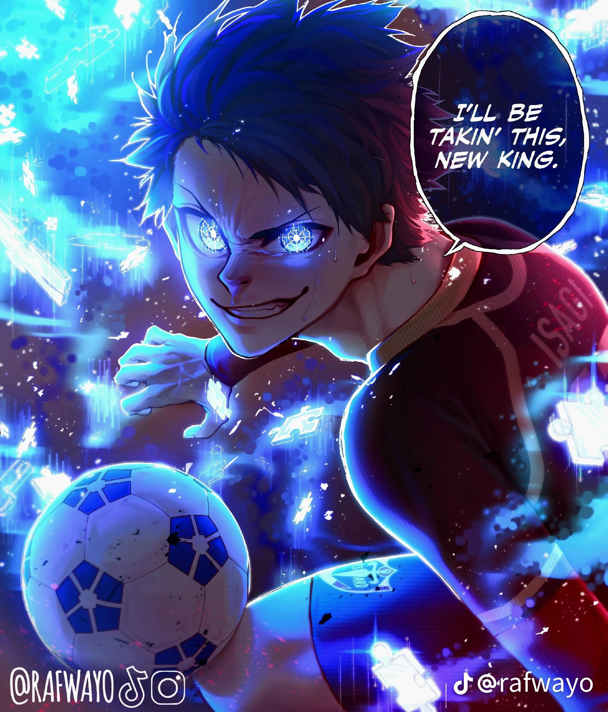

Isagi
Un joueur doté d'une metavision exceptionnelle, capable de lire le jeu et d’anticiper les actions adverses pour créer des opportunités décisives.

Blue Lock est un manga/anime sportif centré sur le football et la quête de l’attaquant ultime. Découvrez les joueurs emblématiques tels que Isagi, Rin et Kaiser, chacun prêt à tout pour atteindre l'excellence.
Commencer la visiteUn joueur doté d'une metavision exceptionnelle, capable de lire le jeu et d’anticiper les actions adverses pour créer des opportunités décisives.
Un joueur hyper degeulasse mais redoutable dans son approche froide du jeu. Sa technique et sa détermination en font l'un des plus grands rivaux d'Isagi.
Un attaquant de génie qui maîtrise le Kaiser Impact. Arrogant et sûr de lui, il est considéré comme l’un des plus grands dangers dans le projet Blue Lock.